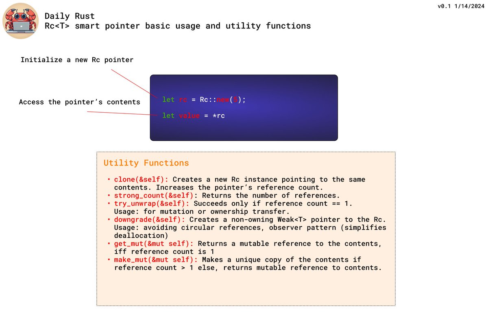
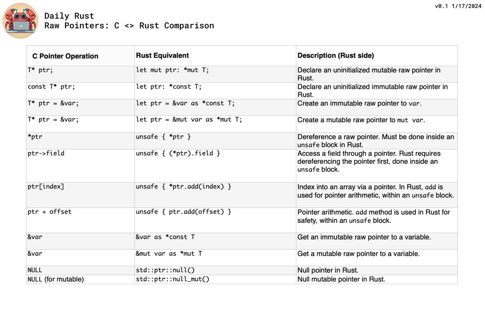
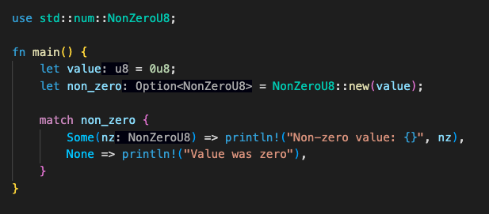

Tip #61
前几天有人问我关于智能指针的事。这里简单介绍一下 Rc<T> 智能指针的基础知识：

Tip #62
这是一篇关于 Rust 中的错误处理以及如何应用 anyhow 库的精彩文章：
https://antoinerr.github.io/blog-website/2023/01/28/rust-anyhow.html
Tip #63
刚开始学习 Rust 编程时，我惊讶地发现示例中从未见过任何原始指针。常见的都是 Box<>(), Arc<>() 等智能指针。事实上，原始指针确实存在，但在惯用的 Rust 代码中很少使用。深入了解后，这里提供一个 C 语言与 Rust 原始指针的并排对比：

Tip #64
今天我学到了关于 NonZero 数值类型的知识，你可以确保在编译时数值不会为零。它也是一个真正的零成本抽象，因为如果你定义了例如 Option<NonZeroU8>，那么 "0" 值就会映射到 "None"。非常巧妙！这里有个例子：

Tip #65
这里有一篇由 @ThePrimeagen 撰写的有益论述，列举了 Rust 中枚举（Enums）的优势：
RUST Enums ARE Better (youtube.com)
Tip #66
std::time::Instant 可以作为一种简便方式用于测量代码块的执行时间：
|
|
Tip #67
单元结构体（Unit Struct）和元组结构体（Tuple Struct）是 Rust 类型系统中实用但不太为人知的构造体。
- 单元结构体：可以在类型层面表示一个概念，同时也是在无需数据的情况下实现trait的好帮手。
- 元组结构体：类似于元组，但能实现方法。
|
|
Tip #68
今天我发现可以在Trait中定义 #常量，而且在trait的具体实现（impl）中也可以重定义这些值。我还在权衡这样做的利弊。你会如何利用这个特性呢？分享你的想法吧！
|
|
Tip #69
如果你遇到嵌套的 Option 情况，比如 Option<Option<T>>，你可以使用 .flatten() 方法去除一层嵌套:
|
|
Tip #70
这条在 match 语句中使用的神秘语法特性是由一位关注者向我推荐的：
var_name @ match_value => ... 允许你在匹配块中捕获 match_value的值来使用。下面的代码示例应该能清晰地说明这是如何运作的：
|
|
Tip #71
Rust 支持与 C 兼容的联合（union）类型。由于联合的成员共享相同的内存，它们本质上是不安全的。我能想到的最佳应用场景是与 C++ 交互，以及可能的二进制数据协议，比如将字节数组与其他类型联合在一起使用。
|
|
Tip #72
Rust 的数值类型真棒！你可以直接使用点符号表示法在数值上调用常见的数学函数。例如，只需通过调用 32.0.sin() 就能计算32.0的正弦值。这一特性增强了代码的可读性，减少了对冗长函数调用的需求。
|
|
Tip #73
include_str!() 和 include_bytes!() 宏能够在编译时将文件作为字符串或字节数组包含进来。这样就避免了使用冗长且杂乱的多行字符串字面量。编译器甚至会检查文件是否存在，如果文件缺失，还会报错提示。
|
|
Tip #74
Rust 中迭代器的 .zip() 函数能够让两个 Vec 转换成单一的元组 Vec。然而，其语法不如 Python 版本那样方便。但这个问题可以通过优雅地使用泛型来解决：
|
|
Tip 插播一条
标签通常与嵌套循环关联在一起使用。
在下面的例子中，我使用了 break 'outer 从内部循环跳出到外层循环之外。
但实际上，它们的功能远不止于此：你可以在 任何 Rust 代码块上标注一个标签！
这开启了一个不错的编程模式，如下所示：
|
|
或者
|
|
Tip #75
标有 Send 标记 trait的类型表示它们在多个线程之间移动是安全的。Rust 利用这一点来确保在编译时的线程安全性。
虽然编译器会自动为许多标准类型实现 Send，但对于自定义类型，我们依靠开发者——Send 是通过不安全代码块添加的：
|
|
Tip #76
快速入门：如何在你的 Rust 代码上运行调试器：
➡️ 使用调试符号构建：
|
|
➡️ 使用 lldb（或更美观输出的 rust-lldb）启动你的程序：
|
|
➡️ 在特定行设置断点：
|
|
➡️ 通过名称设置函数断点：
|
|
➡️ 运行你的程序
|
|
➡️ 运行时的调试命令
frame variable会显示当前作用域内的所有变量n执行当前行然后暂停s进入当前行（调用最内层函数并停止）c继续执行直到下一个断点
Tip #77
Threads: working together. for CPU bound tasks.Async: waiting together. for I/O bound tasks.
Tip #78
这里有一个很好的介绍文章，介绍如何从你的 Rust 代码中调用外部进程，并处理输出。
https://rust-lang-nursery.github.io/rust-cookbook/os/external.html
Tip #79
作为函数输入参数使用 &Option<T> 还是 Option<&T>？
通常，Option<&T> 是首选的方式，因为它提供了更多的灵活性转换，并利用了空指针优化（pointer niche optimization）。这意味着它可以自然地接受 None（空值）或 &T（对某个值的引用），并且在内部实现上更为高效，特别是当与 Rust 的零值优化特性结合时。
| argument | arg type : Option<&T> | &Option |
|---|---|---|
| foo: Option |
foo.as_ref() | &foo |
| foo: Option<&T> | foo | can't be done |
| foo: T | Some(&foo) | &Some(foo)† |
| foo: &T | Some(foo) | can't be done |
一个专门掰扯这个话题的帖视频：https://www.youtube.com/watch?v=6c7pZYP_iIE
Tip #80
我需要编写一个函数，能够灵活地在编译时定义输出数组的大小。事实证明，const 泛型对此非常有帮助。
"Const 泛型"使我们能够通过常量对类型进行参数化，因此得名。
这种特性允许你在定义泛型时使用编译时常量来指定类型的一部分，比如数组长度或结构体中的字段大小，从而在编译时就能确定这些值，而非运行时。这样可以提高代码效率，同时也增加了类型的灵活性和代码的重用性。
|
|